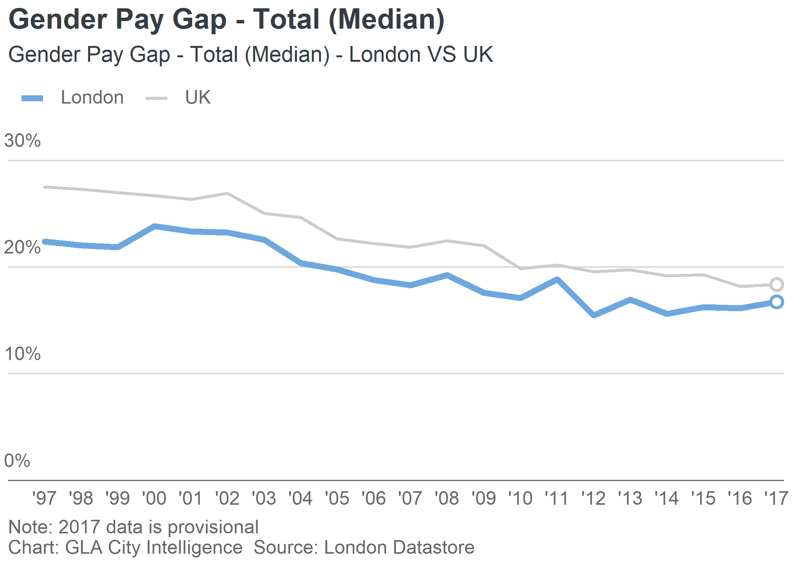

The package provides several wrappers and tools to use with ggplot2 to make graphics that follow the GLA City Intelligence Data Design Guidelines.
Installation
# To install from github use the devtools function: # This will install all required dependencies devtools::install_github("Greater-London-Authority/gglaplot")
Usage
library(ggplot2) library(gglaplot) library(dplyr) library(scales) library(lubridate) pal <- gla_pal(gla_theme = "default", palette_type = "highlight", n = c(1, 1)) theme_set(theme_gla(gla_theme = "default")) plot <- ggplot(data = LDNUK, mapping = aes(x = Year, y = GPG, group = location, colour = location)) + ggla_line(aes(size = location)) + scale_size_manual(values = c(4 * mm_to_pt, 2 * mm_to_pt)) + scale_colour_manual(values = pal) + ggla_highlight(filter_type = "end") + ggla_axisat0() + scale_y_continuous(expand = c(0, 0), limits = c(0, 32.5), labels = dollar_format(prefix = "", suffix = "%")) + scale_x_date(date_breaks = "1 year", date_labels = "'%y", expand = expand_scale(mult = c(0.05, 0.01))) + labs(title = "Gender Pay Gap - Total (Median)", subtitle = "Gender Pay Gap - Total (Median) - London VS UK", caption = "Note: 2017 data is provisional\nChart: GLA City Intelligence Source: London Datastore") plot

Plots can be incorporated in Rmarkdown/Notebooks or exported to be included in documents/slideshows etc
ggsave(plot = plot, path = "example_plot.svg")
.svg is the best format to export plots, and the size and dpi of the output can be adjusted within ggsave().
Getting Help
gglaplot
For help with gglaplot itself, see the vignettes which are available on the gglaplot github pages.
The BBC has a similar package for their house style which has some comprehensive help pages here.